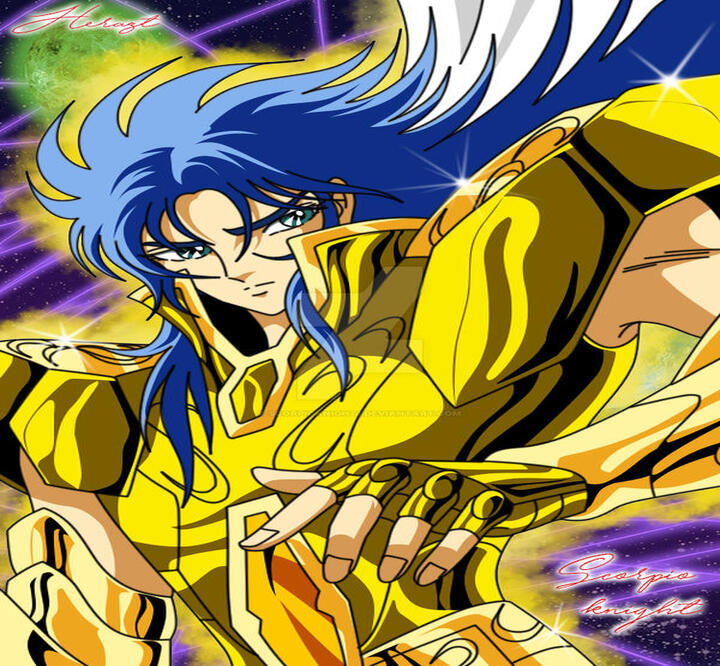
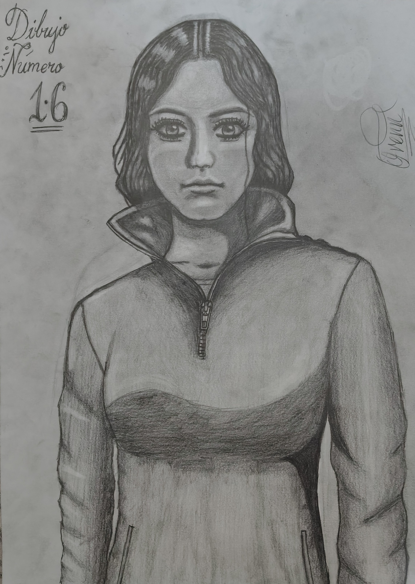

Si deseas saber más información acerca del dibujo de tu interés... Búscalo por su IDNº!!!.

IDNº 1: Lalatina Dustiness Ford.
(Konosuba)

IDNº 2: Megumin.
(Konosuba)

IDNº 3: Tejina-Senpai.
(Tejina Senpai)

IDNº 4: Rias Gremory.
(High School DXD).

IDNº 5: Frieren
(Sousou No Frieren).

IDNº 6: Hanabata Nohkins .
(Futoku No Guild).

IDNº 7: Zelda: .
(The Legend Of Zelda: Breath Of The Wild).

IDNº 8: Tino Shade. .
(Nageki No Bourei Wa Intai Shitai).
IDNº 9: Dibujo Incógnito.
(Sin información).
IDNº 10: Cata - A ^^.
(Anime: No Aplica).

IDNº 11: Goku
(Dragon Ball Super).
> hasta la Batalla de los doce casas, justamente por ser el usurpador del Gran Maestro del Santuario, con el fin de dominar el mundo y acabar con Saori y sus caballeros al manipular al Ejército de Athena.
Saga es considerado el caballero de oro más poderoso de su generación. Además, antes de corromperse, era considerado como un dios, por ser un caballero justo y bondadoso con todos los cercanos al Santuario, siendo admirado y respetado por propios y extraños, sin embargo sus proezas solo han sido vistas frente a caballeros de bronce que fueron
capaces de superar o igualar a otros caballeros de Oro. Fue el candidato a Gran Patriarca del Santuario, pero la influencia de Kanon y su lado malvado, acrecentaron su lado turbio por lo cual, al ser elegido Aiolos como el supremo Maestro, lo llevó a cometer un golpe de estado, que se conocería como La Rebelión de Saga, matando a Shion y a Arles (solo anime).
Encontró la muerte al quitarse la vida con el báculo Niké (en el animé), producto de su arrepentimiento por haber levantado los puños contra su diosa. Posteriormente vuelve a la vida gracias al <> del Rey del Inframundo, Hades como parte de su plan para eliminar a Athena sin depender de sus Espectros resucitando no solamente a Saga
sino también a los antiguos caballeros dorados como: Shion de Aries, Shura de Capricornio, Camus de Acuario, Máscara Mortal de Cáncer y Afrodita de Piscis, así como a algunos caballeros de Plata (en el anime) como principales baluartes en su ofensiva contra el Santuario simulando obedecer sus órdenes. Desapareció en el infinito luego de haberse expirado sus doce
horas de vida temporal así como le ocurrió a sus compañeros; no obstante Saga y sus compañeros siguieron siendo tan fieles a su Diosa como cuando estaban vivos, ya que todo fue parte del plan de Shion para ayudar a Athena en su lucha contra Hades. Finalmente, su alma desapareció junto con las almas de sus compañeros, cuando se sacrificaron
para destruir el Muro de los Lamentos con la flecha de Aiolos de Sagitario y permitir a los cinco santos de Bronce pasar por la Superdimensión para entrar a los Campos Elíseos. Saga es un hombre alto de contextura musculosa y alargada. Su cabello es uno de los más largos de los Santos Dorados; es erizado, solo mostrándose ondulado cuando se
lo recoge a un lado. Su cabello es de color azul violáceo, ojos de color viridián y piel pálida en la animación. Sus cejas son pronunciadas, de una tonalidad azul más oscura. De entre todos los caballeros, tiene una particularidad: en su forma malvada o corrompida su cabello se vuelve gris claro y sus globos oculares adquieren un color rosado
ardiente indicados que están inyectados en sangre. Asimismo, su piel en este estado se torna pálida y desde la parte inferior de sus parpados bajan unas sombras que se hacen mas finas hasta llegar a la barbilla. Cada vez que cambia de personalidad, el color de su cabello cambia. Saga es un personaje con dos personalidades (una buena y la otra mala),
como es originario su pertenencia a la constelación de Géminis. Tiene un lado bueno (marcado con el cabello de color rubio en el manga, azul en el anime) y el mal (que se caracteriza por el pelo gris), que lo llevó a sufrir de esquizofrenia, de trastorno disociativo de la personalidad y a veces termina teniendo discusiones consigo mismo.
Es quizás unos de los personajes más complejos en toda la serie, es inteligente, astuto, serio, frío y muy poderoso, que a pesar de haber demostrado una postura de villano y ser el mayor responsable de las muertes a través de las Doce Casas, es considerado como un líder nato por la mayoría de sus compañeros a tal punto que en la saga de Hades,
es el encargado de llevar la cabeza de Athena ante el dios del inframundo, razones por la cual Shura de Capricornio y Camus de Acuario le obedezcan y lo sigan como líder sin oponerse a sus órdenes." data-modal-src="img/saga-A.jpg">
IDNº 12: Saga
(Saint Seiya).

IDNº 13: Shaka
(Saint Seiya).
IDNº 14: Cata - B ^^.
(Anime: No Aplica).

IDNº 15: Momo.
(Dandadan).
IDNº 16: Dibujo Recuerdos UBB.
(Anime: No Aplica).
IDNº 17: Dibujo Incógnito.
(Sin información).
IDNº 18: Dibujo Incógnito.
(Sin información).